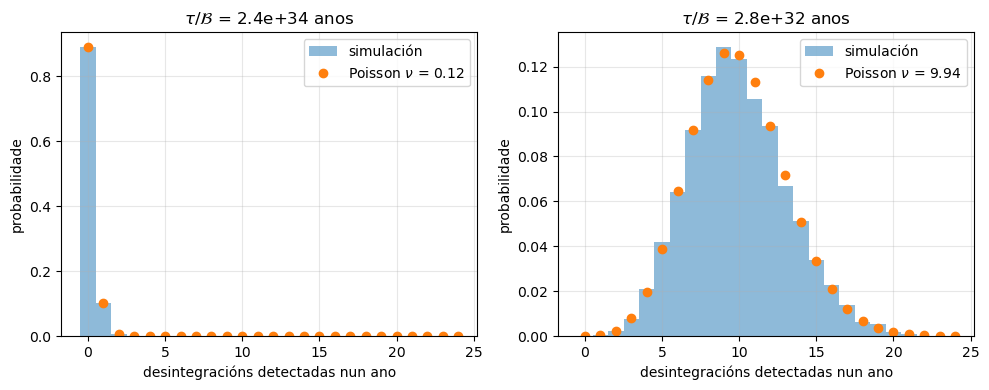
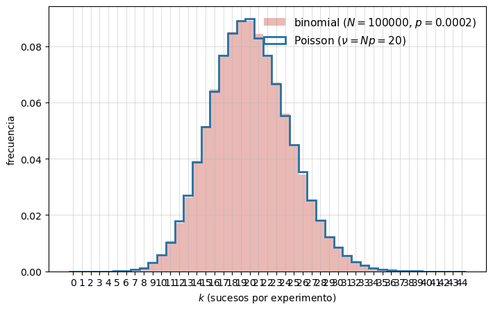
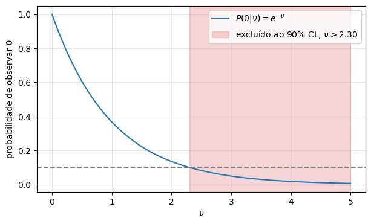
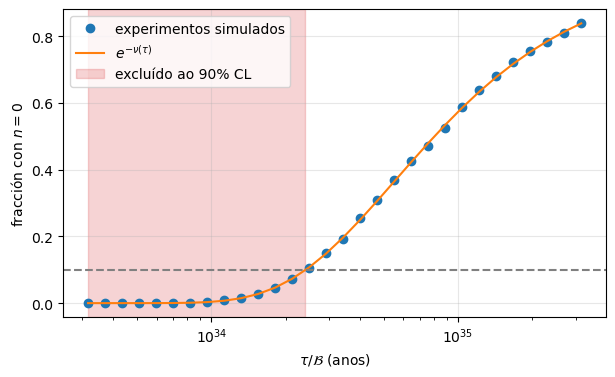

Desintégrase o protón?#
Boletín guiado (versión simple): o límite de Super-Kamiokande a \(p \to e^+ + \pi^0\)#
Jose A. Hernando
Departamento de Física de Partículas. Universidade de Santiago de Compostela
# Configuración e importacións
%matplotlib inline
%reload_ext autoreload
%autoreload 2
import numpy as np
import matplotlib.pyplot as plt
import scipy.constants as units
from scipy.stats import poisson, binom
import sys; sys.path.append('..') # fnyp está en notebooks/
try:
from fnyp import common as fn
except ModuleNotFoundError: # en Google Colab hai que traer antes o repositorio
!git clone -q https://github.com/xabiercidvidal/USC-FNeP.git
import sys; sys.path.append('USC-FNeP/notebooks')
from fnyp import common as fn
fn.version()
Last version Wed Oct 7 08:57:59 2026
Obxectivos#
Ler o abstract dun artigo de busca e extraer os números relevantes.
Identificar os brancos e contalos: os protóns de Super-Kamiokande (SK).
Entender a exposición: \(N_0\) protóns durante \(T\) anos equivalen a \(T N_0\) protóns durante un ano.
Estimar o número de desintegracións esperadas cando \(\tau \gg t\).
Entender que, con poucos sucesos, o número observado segue unha distribución de Poisson.
Se non se observa nada, fixar un límite ao 90% de nivel de confianza (CL) e comprobar que significa con experimentos simulados.
Ver que con fondo as cousas se complican.
O problema#
No Modelo Estándar o número bariónico \(B\) consérvase; isto implica que o protón non se desintegra, pois é o barión máis lixeiro.
As teorías de Gran Unificación (GUT) sitúan quarks e leptóns nos mesmos multipletes e predín que o protón se desintegra, isto é, violan a conservación do número bariónico, con vidas medias da orde de \(10^{34}\)–\(10^{36}\) anos.
A canle favorita de moitas GUT é:
SK non mide a vida media total do protón \(\tau\), senón a vida media parcial \(\tau/\mathcal{B}\) da canle que busca, onde \(\mathcal{B}\) é a súa fracción de desintegración.
Super-Kamiokande#
Super-Kamiokande a) debuxo do detector b) principio de detección [SK, MT13.2] |

Tanque cilíndrico de auga ultrapura: 50 kt, 11 k PMT, a 1000 m baixo a montaña Ikenoyama (Xapón).
Toma datos desde 1996. O seu sucesor, Hyper-Kamiokande (HK), de 260 kt, conta con participación da USC.
O artigo#
Super-Kamiokande Collaboration, Search for proton decay via \(p\to e^+\pi^0\) and \(p\to \mu^+\pi^0\) with an enlarged fiducial volume in Super-Kamiokande I-IV, Phys. Rev. D 102, 112011 (2020), arXiv:2010.16098
We have searched for proton decay via \(p\to e^+\pi^0\) and \(p\to \mu^+\pi^0\) modes with the enlarged fiducial volume data of Super-Kamiokande from April 1996 to May 2018, which corresponds to 450 kton\(\cdot\mathrm{years}\) exposure. We have accumulated about 25% more livetime and enlarged the fiducial volume of the Super-Kamiokande detector from 22.5 kton to 27.2 kton for this analysis, so that 144 kton\(\cdot\mathrm{years}\) of data, including 78 kton\(\cdot\mathrm{years}\) of additional fiducial volume data, has been newly analyzed. No candidates have been found for \(p\to e^+\pi^0\) and one candidate remains for \(p\to \mu^+\pi^0\) in the conventional 22.5 kton fiducial volume and it is consistent with the atmospheric neutrino background prediction. We set lower limits on the partial lifetime for each of these modes: \(\tau/Br(p\to e^+\pi^0) > 2.4 \times 10^{34}\) years and \(\tau/Br(p\to \mu^+\pi^0) > 1.6 \times 10^{34}\) years at 90% confidence level.
[>] Tarefa — Ler un *abstract*
Le só o abstract e responde:
Que canles se buscan? Cantos anos de datos?
Que é a exposición? Por que se dá en kt·ano e non en anos?
Que é o volume fiducial? Por que é menor ca os 50 kt do tanque?
Que resultado se dá? É unha medida ou un límite?
Como se compara \(2.4 \times 10^{34}\) anos coa idade do Universo, \(1.38 \times 10^{10}\) anos?
Solución
\(p\to e^+\pi^0\) e \(p\to\mu^+\pi^0\). Datos de abril de 1996 a maio de 2018: 22 anos de calendario (con paradas).
Exposición = masa × tempo de toma de datos. O que conta é o número de protóns·ano observados: 10 kt durante 1 ano equivalen a 1 kt durante 10 anos.
Volume interior, afastado das paredes, onde se aceptan os sucesos. Preto das paredes a reconstrución é peor e entra máis fondo (radioactividade da rocha e dos PMT, muóns cósmicos). É un compromiso entre masa e limpeza: a novidade do artigo é amplialo de 22.5 a 27.2 kt.
Non hai sinal: un límite inferior á vida media parcial ao 90% CL.
\(2.4 \times 10^{34} / 1.38 \times 10^{10} \approx 1.7 \times 10^{24}\) veces a idade do Universo. E aínda así pódese medir! O truco: moitísimos protóns.
tau_lim = 2.4e34 # anos, tau/Br(p -> e+ pi0) ao 90% CL [SK 2020]
t_U = 1.38e10 # anos, idade do Universo
print('tau/Br / idade do Universo = {:.1e}'.format(tau_lim / t_U))
tau/Br / idade do Universo = 1.7e+24
Os brancos#
[>] Tarefa — Os brancos
Nunha busca de desintegracións, os brancos son as partículas que poderían desintegrarse.
Masa molar da auga \(M_A = 18.015\) g/mol; \(N_A = 6.022 \times 10^{23}\) \(\mathrm{mol}^{-1}\).
Cales son os brancos en SK?
Cantos hai en 1 kt de auga? E no volume fiducial de 22.5 kt?
N_A = units.N_A # 1/mol
M_A = 18.015 # g/mol, auga
kt = 1e9 # g
n_mol = kt / M_A * N_A # moléculas de H2O por kt
p_total = 10 * n_mol # protóns por kt: 2 do H e 8 do O
N0 = 22.5 * p_total # protóns no volume fiducial
print('moléculas / kt = {:.2e}'.format(n_mol))
print('protóns / kt = {:.2e}'.format(p_total))
print('protóns en 22.5 kt = {:.2e}'.format(N0))
moléculas / kt = 3.34e+31
protóns / kt = 3.34e+32
protóns en 22.5 kt = 7.52e+33
Solución
Os protóns da auga: 2 libres (H) e 8 ligados no \(^{16}\mathrm{O}\) por molécula. SK usa os 10.
\(3.34 \times 10^{31}\) moléculas e \(3.34 \times 10^{32}\) protóns por kt. En 22.5 kt, \(N_0 = 7.52 \times 10^{33}\) protóns.
A exposición#
SK resume os seus datos nunha exposición de 450 kt·ano.
Para vidas medias moi longas (\(\tau \gg t\)), observar \(N_0\) protóns durante \(T\) anos é o mesmo que observar \(T\,N_0\) protóns durante un ano: só importa o produto \(N_0\,T\), a exposición.
[>] Tarefa — A exposición
Se todos os datos se tomasen co volume fiducial de 22.5 kt, cantos anos de toma de datos serían? E con 1 kt?
exposicion = 450 * p_total # protóns x ano
print('anos con 22.5 kt = {:.0f}'.format(450 / 22.5))
print('anos con 1 kt = {:.0f}'.format(450 / 1))
print('exposición = {:.2e} protóns ano'.format(exposicion))
anos con 22.5 kt = 20
anos con 1 kt = 450
exposición = 1.50e+35 protóns ano
Solución
\(450/22.5 = 20\) anos. Con 1 kt, 450 anos. (En realidade, SK combina períodos con 22.5 e 27.2 kt.)
En protóns: \(450 \times 3.34 \times 10^{32} = 1.50 \times 10^{35}\) protóns·ano.
Cantas desintegracións esperamos?#
[>] Tarefa — Desintegracións esperadas
Supón que \(\tau/\mathcal{B}\) é xusto o límite de SK, \(2.4 \times 10^{34}\) anos. A eficiencia de selección de SK (fracción de desintegracións que detecta) é \(\varepsilon = 0.37\).
Con \(N_0\) protóns, cantos quedan tras un tempo \(t\)? Demostra que, se \(t \ll \tau\), o número medio de desintegracións é \(N_0\,t/\tau\).
Cantas desintegracións esperas detectar nun ano no volume fiducial de 22.5 kt? E coa exposición de 450 kt·ano?
Que masa de auga necesitas para detectar, en media, unha desintegración ao ano?
eps = 0.37 # eficiencia de SK para p -> e+ pi0
tau = tau_lim # límite de SK para tau (anos)
print('nu en 1 ano (22.5 kt) = {:.2f}'.format(eps * N0 * 1 / tau))
print('nu con 450 kt ano = {:.2f}'.format(eps * exposicion / tau))
print('masa para nu = 1 ao ano = {:.0f} kt'.format(tau / (eps * p_total)))
nu en 1 ano (22.5 kt) = 0.12
nu con 450 kt ano = 2.32
masa para nu = 1 ao ano = 194 kt
Solución
\(N(t) = N_0\,e^{-t/\tau} \simeq N_0\,(1 - t/\tau)\), logo desintégranse \(N_0 - N(t) \simeq N_0\,t/\tau\).
SK detecta, en media, \(\nu = \varepsilon N_0\,t/\tau\): \(\nu = 0.12\) nun ano. Coa exposición total, \(\nu = 2.3\). SK non viu ningunha: verémolo na tarefa Non vemos nada.
\(\approx 190\) kt, como o volume fiducial de Hyper-Kamiokande (187 kt).
O número de desintegracións nunha canle vén dado por \(N_i = \mathcal{B} \, N_0\,t/\tau = N_0\,t \, (\mathcal{B}/\tau)\). En realidade, SK pon o límite en \(\mathcal{B}/\tau\), dado que non poden separar os dous factores \(\mathcal{B}, \tau\) a partir dos seus datos.
A distribución de Poisson#
Cada protón é un «intento» cunha probabilidade minúscula de desintegrarse no tempo \(t\):
O número de desintegracións entre \(N_0 \sim 10^{34}\) protóns segue unha binomial \(B(n \,|\, N_0, p)\).
Cando \(N_0 \to \infty\), \(p \to 0\) con \(\nu = N_0 p\) fixo, a binomial tende á Poisson:
Só depende de \(\nu\): tanto ten cantos protóns e canto tempo, só importa o número medio.
[>] Tarefa — Poucos sucesos
Demostra que, se \(N_0 \to \infty\) e \(p \to 0\) con \(\nu = N_0 p\) fixo, a binomial tende á Poisson.
Simula o número de desintegracións detectadas en 10000 «anos» de SK (22.5 kt) para \(\tau/\mathcal{B} = 2.4 \times 10^{34}\) anos e para \(\tau/\mathcal{B} = 2.8 \times 10^{32}\) anos. Compara os histogramas coa Poisson. Cal é o resultado máis probable en cada caso? Con que probabilidade non se ve nada?
rng = np.random.default_rng()
n_años = 10000
fig, axs = plt.subplots(1, 2, figsize=(10, 4))
for ax, tau_i in zip(axs, (2.4e34, 2.8e32)):
nu_i = eps * N0 * 1 / tau_i
cuentas = rng.poisson(nu_i, size=n_años) # un número por cada 'ano' simulado
ns = np.arange(0, 25)
ax.hist(cuentas, bins=ns - 0.5, density=True, alpha=0.5, label='simulación')
ax.plot(ns, poisson.pmf(ns, nu_i), 'o', label=r'Poisson $\nu$ = {:.2f}'.format(nu_i))
ax.set_xlabel('desintegracións detectadas nun ano'); ax.set_ylabel('probabilidade')
ax.set_title(r'$\tau/\mathcal{{B}}$ = {:.1e} anos'.format(tau_i))
ax.grid(alpha=0.3); ax.legend()
print('nu = {:5.2f}: máis probable n = {}, P(0) = {:.2g}, P(1) = {:.2g}'.format(
nu_i, ns[np.argmax(poisson.pmf(ns, nu_i))], poisson.pmf(0, nu_i), poisson.pmf(1, nu_i)))
fig.tight_layout()
nu = 0.12: máis probable n = 0, P(0) = 0.89, P(1) = 0.1
nu = 9.94: máis probable n = 9, P(0) = 4.8e-05, P(1) = 0.00048

Solución
Con \(p = \nu/N_0\):
Con \(\sim 10^{34}\) protóns a Poisson é exacta a efectos prácticos.
\(\nu = 0.12\) e \(\nu = 10\) ao ano. Con \(\nu = 0.12\) o máis probable é non ver nada: \(P(0) = 89\%\), \(P(1) = 10\%\). Con \(\nu = 10\) o máis probable é ver 9 ou 10 e \(P(0) = e^{-10} \approx 5 \times 10^{-5}\); a distribución é case gaussiana, con \(\sigma = \sqrt{10} \approx 3.2\).
import numpy as np
import matplotlib.pyplot as plt
N, p = 100000, 20e-5
nu = N * p
print('nu = {:5.2f}'.format(nu));
n_exp = 200000 # n.º de experimentos simulados
rng = np.random.default_rng(1)
k_bin = rng.binomial(N, p, n_exp)
k_poi = rng.poisson(nu, n_exp)
# variable discreta -> un bin por enteiro, centrado nel
kmax = max(k_bin.max(), k_poi.max())
bins = np.arange(-0.5, kmax + 1.5)
fig, ax = plt.subplots(figsize=(7.2, 4.6))
ax.hist(k_bin, bins=bins, density=True, color="#c0392b", alpha=0.35,
label=f"binomial ($N = {N}$, $p = {p:g}$)")
ax.hist(k_poi, bins=bins, density=True, histtype="step", lw=2,
color="#2471a3", label=rf"Poisson ($\nu = Np = {nu:g}$)")
#ax.set_yscale("log") # quítao para escala lineal
ax.set_xticks(np.arange(kmax + 1))
ax.set_xlabel("$k$ (sucesos por experimento)")
ax.set_ylabel("frecuencia")
ax.grid(which="major", lw=0.6, alpha=0.5)
ax.legend(frameon=False, fontsize=11)
fig.tight_layout()
plt.show()
nu = 20.00

Non vemos nada: que podemos dicir?#
SK non observa ningunha desintegración \(p \to e^+ + \pi^0\) (\(n = 0\)), cunha exposición de 450 kt·ano e sen fondo.
[>] Tarefa — Non vemos nada
Calcula \(P(0 \,|\, \nu)\) para \(\nu = 0.1, \, 1, \, 2.3, \, 5\). Hai algún valor de \(\nu\) que sexa imposible? Podemos medir \(\tau/\mathcal{B}\)? Que necesitamos para dicir algo?
Co criterio do 90% CL (véxase a Axuda ao final), que valores de \(\nu\) quedan excluídos? Que límite lle pos a \(\tau/\mathcal{B}\)? Compárao co de SK.
Que límite terías obtido esquecendo a eficiencia (\(\varepsilon = 1\))? Por que non é correcto?
for nu_i in (0.1, 1, 2.3, 5):
print('P(0 | nu = {:3}) = {:.3f}'.format(nu_i, poisson.pmf(0, nu_i)))
nu90 = -np.log(0.10) # n = 0: nu > 2.30 excluído ao 90% CL
print()
print('nu_90 = {:.2f}'.format(nu90))
print('límite con eps = {:.2f} = {:.1e} anos'.format(eps, eps * exposicion / nu90))
print('límite con eps = 1 = {:.1e} anos'.format(exposicion / nu90))
nus = np.linspace(0, 5, 200)
fig, ax = plt.subplots(figsize=(7, 4))
ax.plot(nus, poisson.pmf(0, nus), label=r'$P(0 | \nu) = e^{-\nu}$')
ax.axhline(0.10, color='gray', ls='--')
ax.axvspan(nu90, 5, color='C3', alpha=0.2, label=r'excluído ao 90% CL, $\nu > {:.2f}$'.format(nu90))
ax.set_xlabel(r'$\nu$'); ax.set_ylabel('probabilidade de observar 0')
ax.grid(alpha=0.3); ax.legend();
P(0 | nu = 0.1) = 0.905
P(0 | nu = 1) = 0.368
P(0 | nu = 2.3) = 0.100
P(0 | nu = 5) = 0.007
nu_90 = 2.30
límite con eps = 0.37 = 2.4e+34 anos
límite con eps = 1 = 6.5e+34 anos

Solución
\(P(0 \,|\, \nu) = e^{-\nu}\): 0.90, 0.37, 0.10 e 0.007. Ningún \(\nu\) é imposible, só cada vez máis improbable: cun único resultado \(n = 0\) non se pode medir \(\nu\). Fai falta un criterio para decidir a partir de que probabilidade descartamos un valor, e dicilo xunto co resultado: o nivel de confianza.
Exclúese \(\nu\) se \(e^{-\nu} < 0.10\), é dicir, \(\nu > \ln 10 = 2.30\). Como \(\nu = \varepsilon N_0 t/\tau\):
o límite de SK. Por iso, con \(\tau/\mathcal{B}\) xusto no límite, esperabamos \(\nu = 2.3\): é o valor fronteira.
\(\tau/\mathcal{B} > 6.5 \times 10^{34}\) anos: un límite case tres veces máis forte, pero falso. SK só detecta o 37% das desintegracións (pérdese sinal nos cortes que rexeitan o fondo de neutrinos atmosféricos e pola absorción ou dispersión do \(\pi^0\) no osíxeno): con \(\varepsilon = 1\) supoñeriamos unha sensibilidade que non ten.
Que significa o 90%? Experimentos simulados#
Cómpre distinguir dous números:
\(\nu\): o número esperado de desintegracións detectadas. Fíxano a física (\(\tau/\mathcal{B}\)) e o experimento (\(\varepsilon N_0 t\)).
\(n\): o número observado nun experimento concreto. É enteiro e aleatorio, e segue unha Poisson de media \(\nu\).
[>] Tarefa — Experimentos que non ven nada
Usa a exposición e a eficiencia de SK.
Para 30 valores de \(\tau/\mathcal{B}\) entre \(10^{33.5}\) e \(10^{35.5}\) anos, xera 10000 experimentos como SK e debuxa a fracción de experimentos que non ven nada (\(n = 0\)) fronte a \(\tau/\mathcal{B}\).
Que fracción de experimentos non ve nada se \(\tau/\mathcal{B} = 2.4 \times 10^{34}\) anos? Onde cruza a curva o 10%? Que valores de \(\tau/\mathcal{B}\) exclúe SK?
n_exp = 10000
taus = np.logspace(33.5, 35.5, 30) # anos
frac0 = [np.mean(rng.poisson(eps * exposicion / tau_i, size=n_exp) == 0) for tau_i in taus]
f_lim = np.mean(rng.poisson(eps * exposicion / tau_lim, size=n_exp) == 0)
print('tau/B = {:.1e} anos: n = 0 no {:.1f}% dos experimentos'.format(tau_lim, 100 * f_lim))
fig, ax = plt.subplots(figsize=(7, 4))
ax.plot(taus, frac0, 'o', label='experimentos simulados')
ax.plot(taus, np.exp(-eps * exposicion / taus), label=r'$e^{-\nu(\tau)}$')
ax.axhline(0.10, color='gray', ls='--')
ax.axvspan(taus[0], tau_lim, color='C3', alpha=0.2, label='excluído ao 90% CL')
ax.set_xscale('log')
ax.set_xlabel(r'$\tau/\mathcal{B}$ (anos)'); ax.set_ylabel('fracción con $n = 0$')
ax.grid(alpha=0.3); ax.legend();
tau/B = 2.4e+34 anos: n = 0 no 10.0% dos experimentos

Solución
Con \(\nu = 0.37 \times 1.50 \times 10^{35}/(\tau/\mathcal{B})\), a fracción con \(n = 0\) segue \(e^{-\nu}\) e medra con \(\tau/\mathcal{B}\).
Para \(\tau/\mathcal{B} = 2.4 \times 10^{34}\) anos, \(\nu = 2.3\) e a fracción é \(e^{-2.3} \approx 10\%\) (a simulación reprodúceo dentro da súa flutuación estatística, \(\sqrt{P(1-P)/10000} \approx 0.3\%\)): a curva cruza o 10% xusto no límite de SK.
Para valores menores, menos do 10% dos experimentos vería \(n = 0\): están excluídos ao 90% CL. Para valores maiores, ver \(n = 0\) é o normal: SK non pode dicir nada deles.
Que \(\tau/\mathcal{B}\) estea xusto no límite non significa que non poida ser o verdadeiro: nese caso, o 10% dos experimentos non vería nada.
E se hai fondo?#
Algunhas interaccións de neutrinos atmosféricos imitan o sinal.
Se se esperan \(b\) sucesos de fondo e \(\nu_s\) de sinal, o criterio da Axuda xeneralízase a: \(\nu_s\) está excluído ao 90% CL se
[>] Tarefa — O límite con fondo
Se \(n_{obs} = 0\) e \(b = 3\), que límite obtés para \(\nu_s\)? Ten sentido?
En \(p \to \mu^+ + \pi^0\) SK observa un candidato, con \(b \approx 0.94\). Por que o seu límite é peor (\(1.6\) fronte a \(2.4 \times 10^{34}\) anos)?
from scipy.optimize import brentq
def nu_s_90(n_obs, b, cl=0.90):
# Límite superior clásico no sinal: P(n <= n_obs | s + b) = 1 - cl
f = lambda s: poisson.cdf(n_obs, s + b) - (1 - cl)
return brentq(f, -b, 50) # f(-b) = 0.9 > 0 e f(50) < 0
print('n_obs = 0, b = 3 : nu_s_90 = {:.2f}'.format(nu_s_90(0, 3)))
print('n_obs = 1, b = 0.94 : nu_s_90 = {:.2f}, factor fronte a n_obs = 0, b = 0: {:.2f}'.format(
nu_s_90(1, 0.94), nu_s_90(1, 0.94) / nu_s_90(0, 0)))
n_obs = 0, b = 3 : nu_s_90 = -0.70
n_obs = 1, b = 0.94 : nu_s_90 = 2.95, factor fronte a n_obs = 0, b = 0: 1.28
Solución
\(e^{-(\nu_s + 3)} < 0.10 \Rightarrow \nu_s > 2.30 - 3 = -0.70\): exclúese calquera sinal, mesmo \(\nu_s = 0\)! É absurdo e, ademais, premia un experimento con moito fondo que tivo a «sorte» de ver menos sucesos dos esperados. Con fondo fai falta un método máis coidadoso: Feldman e Cousins (1998) dan \(\nu_s \in [0, 1.08]\) neste caso. SK usa un método bayesiano.
Cun candidato hai que admitir máis sinal: \(P(n \leq 1 \,|\, \nu_s + 0.94) = 0.10\) dá \(\nu_s < 2.95\), fronte a \(2.30\) con \(n_{obs} = 0\), e o límite en \(\tau/\mathcal{B}\) é un factor \(\approx 1.3\) peor. A eficiencia de \(\mu^+ + \pi^0\), algo menor, e os detalles da análise de SK explican o resto.
Axuda: o límite ao 90% CL#
Un valor de \(\nu\) queda excluído ao 90% CL se, sendo certo, a probabilidade de obter un resultado como o observado ou máis extremo (aquí, menos sucesos) é menor do 10%.
É dicir, se ese \(\nu\) fose o verdadeiro, máis do 90% dos experimentos observarían máis sucesos ca os que vimos.
Ollo: non significa que haxa un 90% de probabilidade de que ese \(\nu\) sexa falso.
Resumo#
Os brancos de SK son os protóns da auga: \(3.34 \times 10^{32}\) por kt, \(7.5 \times 10^{33}\) no volume fiducial de 22.5 kt.
Para \(\tau \gg t\) só importa a exposición \(N_0\,t\): SK acumula 450 kt·ano \(= 1.5 \times 10^{35}\) protóns·ano.
O número medio de desintegracións detectadas é \(\nu = \varepsilon N_0 t/\tau\): con \(\tau/\mathcal{B} \sim 10^{34}\) anos, \(\lesssim 1\) ao ano en SK.
O número observado segue unha Poisson de media \(\nu\): con \(\nu\) pequeno, o máis probable é non ver nada.
Se non se observa nada, \(\nu < 2.30\) ao 90% CL e \(\tau/\mathcal{B} > \varepsilon N_0 t/2.30\): con \(\varepsilon = 0.37\), o límite de SK, \(2.4 \times 10^{34}\) anos.
Se \(\tau/\mathcal{B}\) estivese no límite, o 10% dos experimentos como SK non vería nada.
Con fondo, o método simple dá resultados sen sentido: Feldman-Cousins ou métodos bayesianos.
O límite medra coa exposición: de aí Hyper-Kamiokande.
Bibliografía#
[SK2020] Super-Kamiokande Collaboration, Phys. Rev. D 102, 112011 (2020), arXiv:2010.16098
[FC] G. J. Feldman, R. D. Cousins, Phys. Rev. D 57, 3873 (1998), arXiv:physics/9711021
[PDG] Particle Data Group, Statistics e Grand Unified Theories, pdg.lbl.gov
[AB] A. Bettini, Introduction to Elementary Particle Physics, Cambridge U. Press.
[MT] M. Thomson, Modern Particle Physics, Cambridge U. Press.